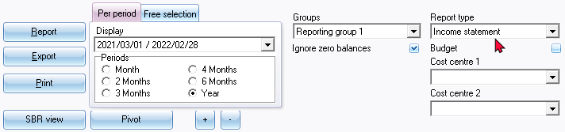
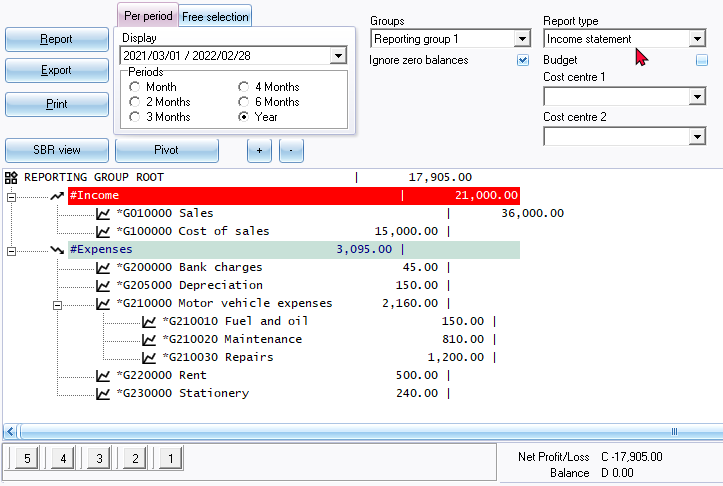
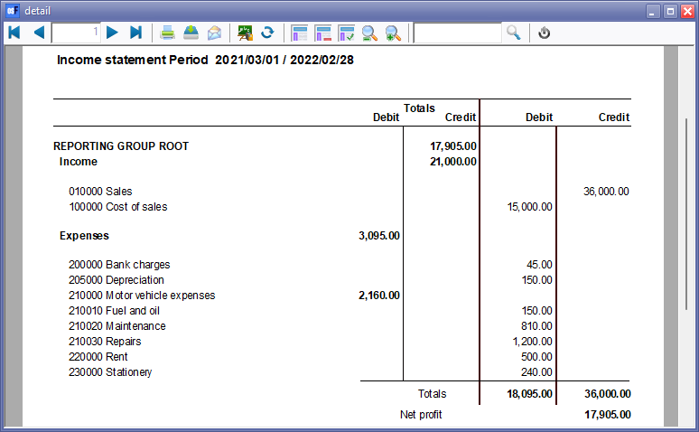
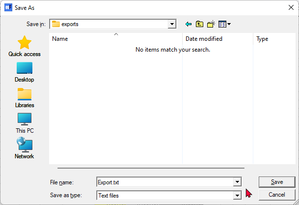
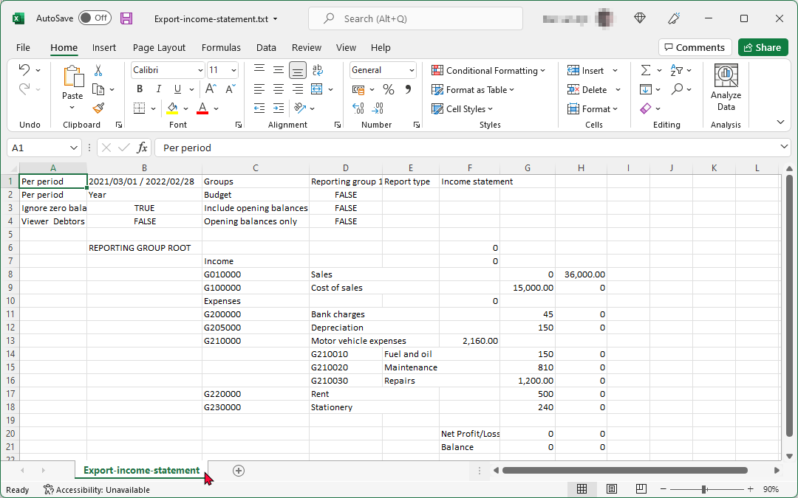

Ledger analyser - Income statement
The Income statement will list all the balances of your accounts which are created as an Income / Expense type in the Setup → Accounts menu, and will reflect your net profit or loss for a specific period. The Income statement has two main sections (financial categories), i.e. Income and Expenses. When the Income exceeds the Expenses, the report will reflect the net profit. If the Expenses exceed the Income, the report will reflect a net loss.
The Income statement is used to manage and report on your businesses' income and expenses. osFinancials5/TurboCASH5 allows you to compare the actual figures in the Income statement with one of the following comparative figures:
- Last year's actual figures, if available. The financial performance of the actual figures may be compared to last year' actual figures for the selected periods.
- Budget figures, if entered in the Budgets option (Reports ribbon) or Setup → Accounts option (Setup ribbon). If the budgeted figures are entered correctly, you may compare the actual income received and expenses paid to the budgeted figures, to determine whether your income is on track, or where you are over spending or under spending.
This will list the following account types and account groups:
 Income accounts.
Income accounts.  Expense accounts.
Expense accounts.
|
|
This report only includes batch and document transactions which are posted. Unposted batches and documents will be NOT be included in this report. To view a list of unposted batches and documents, which is not updated to the ledger, go to Input → Checking unposted items (Default ribbon). |

Income statement options
To print an Income statement:
- On the Reports ribbon, select Ledger analyser 1 or Ledger analyser 2.
- Select the “Income statement” report type.

- Per period - Select a period (Month, 2 Months, 3 Months, 4 Months, 6 Months or Year).
|
|
You may click on the “Free selection” tab. You may select or enter any date or dates, which you need to include in the Income statement. |

- Groups - "None" is the default option. You may select "Reporting group 1" or "Reporting group 2".
|
|
If you have created two (2) Reporting groups (Setup → Groups), you may have different views of your data. For example the Group options:
|

|
|
To change your view of the Accounting groups , select the groups and use the Move up and Move down buttons to change the sequence. This will determine the sequence in which your Groups are listed on the Setup → Accounts option on the Setup ribbon and on the Ledger analyser is displayed, when Reporting group 1 or Reporting group 2 is selected. |
- Ignore zero balances - If this field is not selected, all income and expense accounts will be listed for the Income statement balance. If you select (tick) this field; only those income and expense accounts with balances will be included in the Income statement.
- Budget - Leave this option blank to include the actual posted (updated) transactions in the Income statement.
|
|
The "Budget" option, if selected, will list only the budget figures (Budget listing) in the Trial balance, Income statement, Balance sheet and Standard column balances report types (if budget figures were entered in the Budgets option (Reports ribbon) or Setup → Accounts option on the Setup ribbon). |
- Cost centre 1 and Cost centre 2 - The Cost centres (2 Groups) will only be available, if Cost centres are added in Setup → Groups on the Setup ribbon; and if activated.
- Click on the Report button. This will build or refresh the Income statement with the selected options.
Example : Income statement
An example of the "Income statement - Reporting group 1" report type, is displayed as follows:

|
|
Buttons 5, 4, 3, 2 and 1 at the bottom of the report - is shortcut keys to the last accessed T-Account viewer options or Pivot options. These shortcuts will be cleared when you close active forms, or when you open the Set of Books. |
Printed example : Income statement
Click on the Print button. An example of the printed "Income statement - Reporting group 1", is displayed as follows:

|
|
To save the Income statement as a PDF file:
|
Spreadsheet example : Income statement
To create an Income statement - Export file:
- Click on the Export button. This will launch the "Save as" screen.

- Select the folder in which you wish to save the file.
- The default file name will be "Export.txt". Overtype this with your own name.
|
|
If you do not enter and save the Export.txt file name, you may replace existing (previously exported) files. Of an existing exported file is opened, and you are trying to save a export file with the same name, a similar error message as the following will be displayed: Cannot create file "D:\exports\Export.txt". The process cannot access the file because it is being used by another process. |

- Click on the Save button.
- This will automatically open (launch) the file in your system's default text editor program associated with value text file type.
